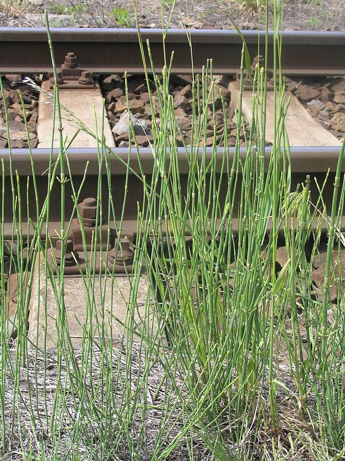

ब्रांच्ड हॉर्सटेलBranched Horsetail
Equisetum ramosissimum · Equisetaceae · FLR-0416

- Scientific name वैज्ञानिक नाम
- Equisetum ramosissimum Desf.
- Family कुल
- Equisetaceae
- Hindi हिंदी
- ब्रांच्ड हॉर्सटेल
- Local names स्थानीय नाम
- branched horsetail, horsetail
- Status here यहाँ की स्थिति
- native
- Movement आवागमन
- Resident, here all year
- Known from कहाँ दर्ज
- Others have published records from the wider Awadh–Purvanchal plain, none yet from Basti–Ayodhya अवध–पूर्वांचल से दूसरों के प्रकाशित अभिलेख, बस्ती–अयोध्या से अभी नहीं
- IUCN IUCN
- LC
- Review समीक्षा
- not yet reviewed
When to look कब देखें
Expected mainly in January, February, March, April, October, November, December. मुख्यतः जनवरी, फ़रवरी, मार्च, अप्रैल, अक्टूबर, नवंबर, दिसंबर में अपेक्षित।
Uses and possibilities उपयोग और संभावनाएँ
“Traditional medicine” means a documented traditional use, not a claim that it works. Nothing on this page is medical advice.
Drawn from the documented uses in the profile below, where each is labelled traditional, current or a research lead. All uses →
ब्रांच्ड हॉर्सटेल / Branched Horsetail
Equisetum ramosissimum Desf. — Equisetaceae
ब्रांच्ड हॉर्सटेल — जिसे जोड़तोड़ या हठजोड़ घास भी कहा जाता है, यह नदियों के रेतीले किनारों, नहरों और नम नालों पर उगने वाला एक बहुत ही प्राचीन आदिम पौधा है। इसमें फूल या बीज नहीं होते बल्कि सिरों पर शंकु जैसे अंग में बीजाणु बनते हैं। इसके तने बांस जैसे जोड़ों वाले और भीतर से खोखले होते हैं, जिनमें सिलिका होने के कारण छूने पर खुरदरापन महसूस होता है।
Quick Identification त्वरित पहचान
| Feature | Description |
|---|---|
| Plant habit | Erect or sprawling perennial rush-like vascular cryptogam with rhizomes |
| Stems | Jointed, cylindrical, grooved, hollow, rough with abrasive silica deposits |
| Branching | Irregularly branched, with whorls of slender green branches from stem nodes |
| Leaves | Reduced to tiny membranous teeth forming a cylindrical sheath at each joint |
| Reproduction | Non-flowering; terminal oblong-ovoid cones (strobili) producing green spores |
| Strobilus | Borne at the tip of main stems, apiculate, composed of peltate sporangiophores |
Field tip: Feel the hollow green jointed stems: they are distinctly rough like fine sandpaper due to silica granules embedded in the ridges.
हिंदी: बांस जैसे जोड़ों वाले खोखले तने, जोड़ों पर दांतों जैसे छल्ले और सिरे पर शंकु जैसी रचना देखकर इसे पहचानें।
Morphology आकारिकी
Measurement not available in consulted sources.
A perennial, evergreen, spore-bearing vascular cryptogam spreading by extensive subterranean creeping rhizomes. Rhizomes deep, branched, dark brown to blackish, bearing fibrous roots and occasional tubers. Aerial stems erect, ascending or decumbent, green, dimorphic or monomorphic, cylindrical, deeply grooved with distinct ridges and furrows, rough to the touch from minute silica tubercles embedded in the epidermal cell walls, hollow with a large central cavity.
Branches produced in irregular whorls from the nodes, erect or spreading, slender, three- to five-angled, solid or with small central cavities. True leaves absent; foliage reduced to miniature, scarious, tooth-like microphylls united into a cylindrical green sheath at each stem node; sheath teeth lanceolate-subulate, persistent or deciduous, with dark brown or blackish centers and pale membranous margins.
Reproductive structure a terminal, solitary, oblong-ellipsoid or ovoid strobilus (cone), borne at the apex of the main stem or lateral branches, distinctly apiculate (tipped with a sharp little point). Strobilus composed of numerous stalked, peltate, hexagonal sporangiophores arranged in tight whorls, each carrying several elongate sporangia on the under surface. Spores numerous, globose, green, each equipped with four hygroscopic ribbon-like bands (elaters) that coil and uncoil with changes in atmospheric humidity.
हिंदी: तने गहरे हरे और खोखले होते हैं। पत्तियों की जगह जोड़ों पर छोटे दांतों जैसे छल्ले होते हैं। सिरों पर शंकु बनते हैं जिनमें हरे बीजाणु होते हैं जो नमी के अनुसार खुलते और मुड़ते हैं।
Behaviour & Ecology व्यवहार और पारिस्थितिकी
A living fossil belonging to one of the most ancient surviving lineages of vascular plants, dating back hundreds of millions of years. It thrives in perpetually moist or seasonally saturated sandy and silty alluvium along river corridors, canal banks, and wetland edges across northern India.
The high concentration of abrasive biogenic silica in its cell walls provides mechanical rigidity and serves as a potent deterrent against grazing mammals and insect herbivores. Spore dispersal is facilitated by the remarkable hygroscopic elaters: under dry conditions, the elaters uncoil rapidly, tangling spores together so they disperse in small clumps, while in humid air they snap back to anchor the spore in damp mud.
हिंदी: यह धरती के सबसे पुराने जीवित पौधों में से एक है। इसकी कोशिकाओं में रेत जैसा सिलिका होता है जिससे मवेशी इसे नहीं खाते। हवा में बीजाणु उड़कर नई जगहों पर जमते हैं।
Life Cycle / Phenology जीवन चक्र
Rhizomes produce fresh aerial shoots throughout the year, with maximum shoot emergence following the monsoon in August and September.
Fertile strobili (cones) develop on the branch tips from November through April, peaking in the cool dry months of January and February. As the cones mature, sporangia split longitudinally, releasing clouds of green spores that are carried by the wind to damp sandy riverbanks. Spores germinate within days on wet silt to produce tiny green sexual prothalli, which subsequently generate new vascular sporophytes.
हिंदी: बरसात के बाद नए तने निकलते हैं। नवंबर से अप्रैल तक सिरों पर शंकु बनते हैं जिनसे बीजाणु निकलते हैं। नम रेत पर गिरते ही ये नए पौधों को जन्म देते हैं।
Associated Species / Interactions सहजीवी प्रजातियाँ
Forms dense colonies along riverbanks, stabilizing loose sand and creating habitat for amphibious frogs, dragonflies, and shorebirds.
Often grows alongside other wetland and riverbank plants such as giant reed (Arundo donax), kans grass (Saccharum spontaneum), and common knotgrass (Polygonum plebeium).
हिंदी: यह नदियों के कछारों पर कांस घास और नरकुल के साथ उगता है और रेतीले किनारों को कटने से बचाता है।
Pests and Diseases कीट और रोग
Remarkably immune to insect pests and plant diseases due to its ancient chemical defenses and dense silica content.
हिंदी: सिलिका की भारी मात्रा और प्राचीन स्वभाव के कारण इस पर कीड़े या बीमारियां नहीं लगतीं।
Agricultural / Human Relevance कृषि प्रासंगिकता
In the alluvial plains of eastern Uttar Pradesh, branched horsetail plays a beneficial ecological role as a bank binder along fragile sandy river terraces, preventing bank erosion during seasonal floods.
Chopra et al. (1956, p. 108, as Equisetum debile) record that the plant is used as a cooling medicine. This is a record of published traditional use, not medical advice.
हिंदी: चोपड़ा और साथियों (1956) के अनुसार यह पौधा शीतल औषधि के रूप में प्रयोग होता है।
Expected Locally स्थानीय रूप से अपेक्षित
Not a field record. Written from published accounts for eastern Uttar Pradesh. No confirmed local sighting yet — if you have seen it, that is what the atlas needs.
अभी तक स्थानीय पुष्टि नहीं। यह विवरण प्रकाशित स्रोतों से है, किसी अवलोकन से नहीं।
Expected on the sandy and silty river terraces of the Ghaghara, Kuwana, and Ami rivers, margins of secondary irrigation canals, and moist seepages across Basti, Ayodhya, and neighbouring districts. GBIF holds published records from the wider Awadh–Purvanchal plain, none yet from Basti–Ayodhya. The first verifiable record from the region will be a dated photograph of flowering plants or a population in a weed habitat or field border with district and coordinates.
हिंदी: बस्ती और अयोध्या में घाघरा और कुआनो नदी के रेतीले किनारों और बड़ी नहरों की तलहटी में इसे देखा जा सकता है।
Distribution वितरण
Global range: Native across Europe, Africa, temperate and tropical Asia, and North America; one of the most widely distributed pteridophytes on Earth.
In India: Widespread across the Himalayas, northern plains, the Gangetic basin, and along perennial river systems of the peninsula.
In Uttar Pradesh: Distributed along the floodplains of the Ganges, Yamuna, Ghaghara, and Rapti river systems.
In Basti district / eastern UP: Expected along permanent watercourses, sandy river shoals, and perennial canal banks.
हिंदी: यह पौधा यूरोप, अफ्रीका, एशिया और पूरे भारत में नदियों और जलाशयों के किनारे पाया जाता है।
Research Questions शोध प्रश्न
- What is the biogenic silica percentage in stems growing in sandy riverbeds versus loamy canal margins?
- How does the rate of bank soil loss compare between river edges colonized by horsetail versus uncolonized sandbanks?
- What is the micro-environmental threshold of moisture required for successful spore germination on local river sandbars? / स्थानीय नदी के कछारों पर बीजाणुओं के अंकुरण के लिए कितनी नमी की आवश्यकता होती है?
- How do the elaters of this species respond to rapid changes in relative humidity under field conditions? / खुले वातावरण में हवा की नमी बदलने पर बीजाणु के पंख किस तरह मुड़ते हैं?
- Can a child take a section of the hollow stem and gently pull it apart at the joint like a miniature telescoping rod?
हिंदी: क्या इसके तने सचमुच जोड़ों से अलग होकर खिलौने की तरह जुड़ सकते हैं और क्या यह नदी के किनारों को कटने से बचाता है?
Similar Species मिलती-जुलती प्रजातियाँ
| Species | How to tell apart | हिंदी |
|---|---|---|
| None | Hollow, grooved, sandpaper-rough jointed green stems with whorled microphylls; unmistakable among local flora | खोखले जोड़दार खुरदुरे तने और सिरों पर शंकु जैसी रचना के कारण स्थानीय वनस्पति में इसका कोई करीबी मिलता-जुलता पौधा नहीं है |
Field rule: Look for the hollow, grooved, sandpaper-rough jointed green stems with teeth-like nodal sheaths and terminal apiculate spore cones.
हिंदी: बांस जैसे जोड़ों वाले खुरदुरे खोखले तने और सिरों पर शंकु जैसी रचना इसे किसी भी घास से अलग पहचान दिलाती है।
Taxonomy & Classification वर्गीकरण
Original description. Described by René Louiche Desfontaines in 1799 in Flora Atlantica, volume 2, page 398.
Subspecies. Highly polymorphic; Asian populations are often referred to Equisetum ramosissimum subsp. debile (Roxb. ex Vaucher) Hauke, characterized by softer stems and longer branches.
Family and order placement. Placed in family Equisetaceae, order Equisetales, class Polypodiopsida (or Equisetopsida).
Phylogenetic notes. Equisetum is the sole surviving genus of the ancient class Equisetopsida, which dominated Carboniferous coal-swamp forests.
IUCN status rationale. Assessed as Least Concern (LC) on the IUCN Red List due to its immense global distribution, broad ecological tolerance, and stable populations.
हिंदी: यह इक्विसेटेसी कुल का एकमात्र जीवित जीनस है। इसका मूल वर्णन 1799 में डेसफोंटेन्स ने किया था। आईयूसीएन ने इसे संकटमुक्त माना है।
Photo Gallery फोटो गैलरी
No photos yet — add field photos to media/species/branched_horsetail/ and run node scripts/sync_photos.js.
Photos needed आवश्यक फोटो
- [ ] Jointed green stems showing nodal sheaths (जोड़ों और छल्लों वाला हरा तना)
- [ ] Terminal apiculate spore-bearing strobilus (सिरे पर बीजाणु शंकु)
- [ ] Colony spreading across moist sandy riverbank (नदी के रेतीले किनारे पर फैला पौधा)
References संदर्भ
- Desfontaines, R. L. (1799). Flora Atlantica, vol. 2, p. 398.
- Chopra, R. N., Nayar, S. L. & Chopra, I. C. (1956). Glossary of Indian Medicinal Plants, Council of Scientific and Industrial Research, New Delhi, p. 108. (as Equisetum debile)
- IUCN (2018). Equisetum ramosissimum: Lansdown, R. V. The IUCN Red List of Threatened Species, 2018. doi:10.2305/iucn.uk.2018-2.rlts.t14828406a120183780.en.
- GBIF Occurrence Data — Equisetum ramosissimum, India (2025).
Source file: species/lower_plants/ferns/branched_horsetail.md